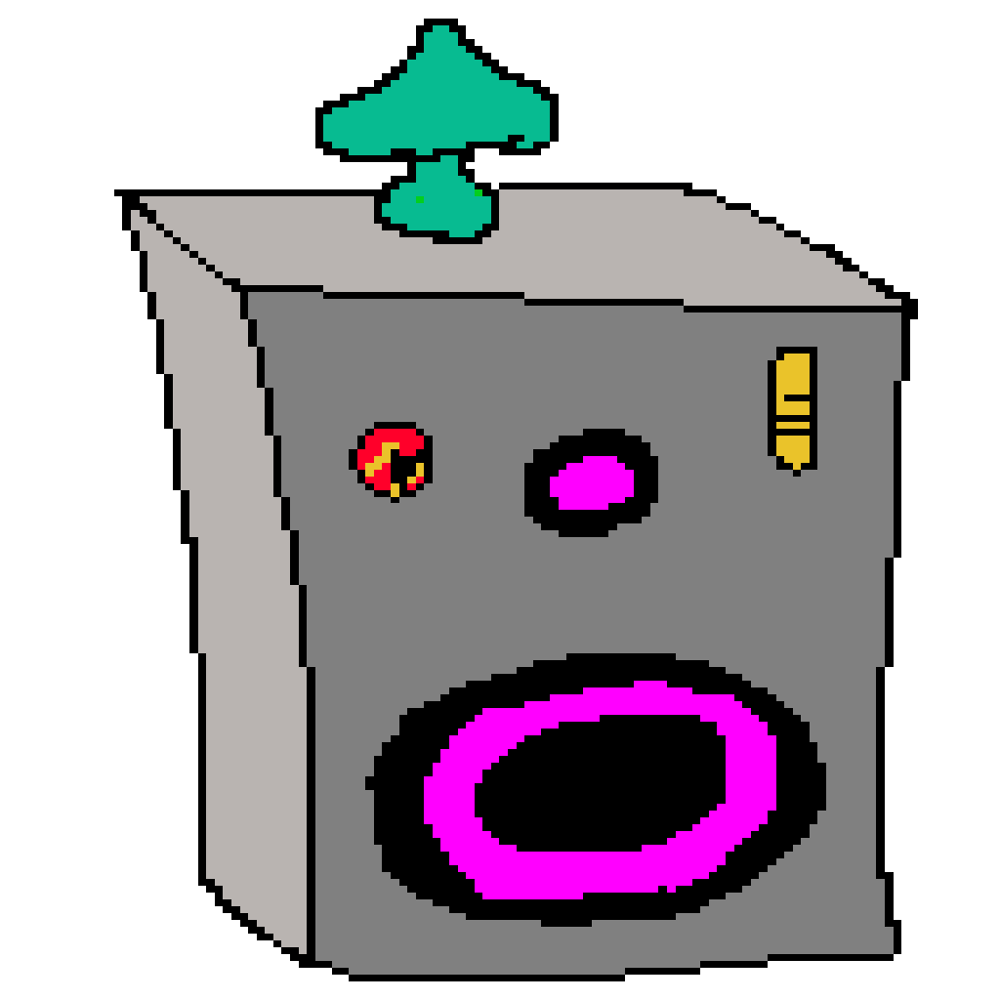
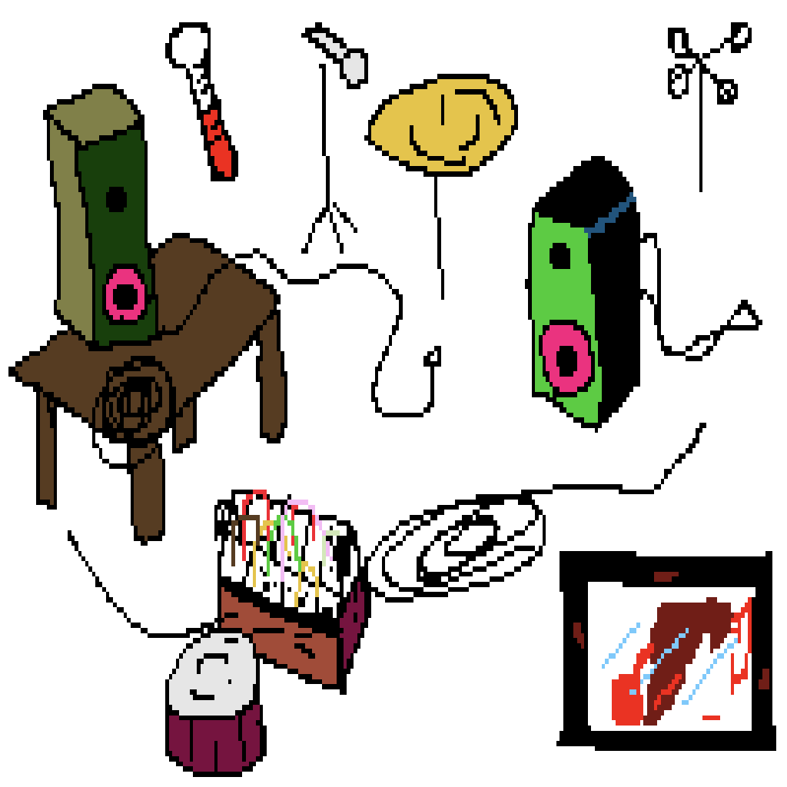
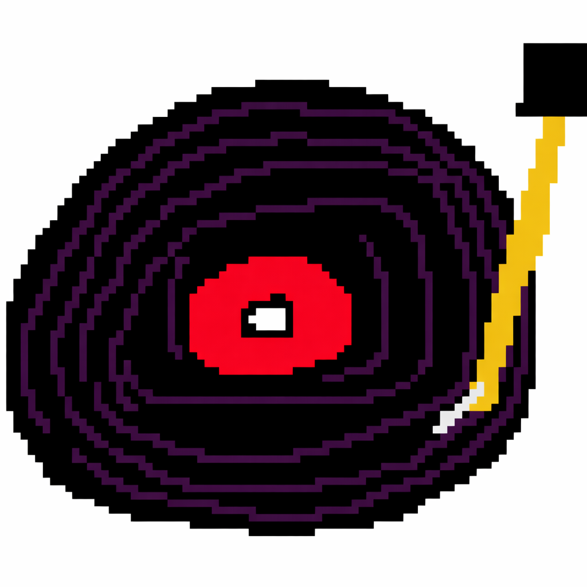

Matteo Traverso
|| sound art || free improvisation || performance ||
|| DSP || acousmatic and multichannel ||
|| sound installation ||
Works
About
Contact
exploring boundaries
of numb senses

acousmatic & multichannel

installations & performances

records